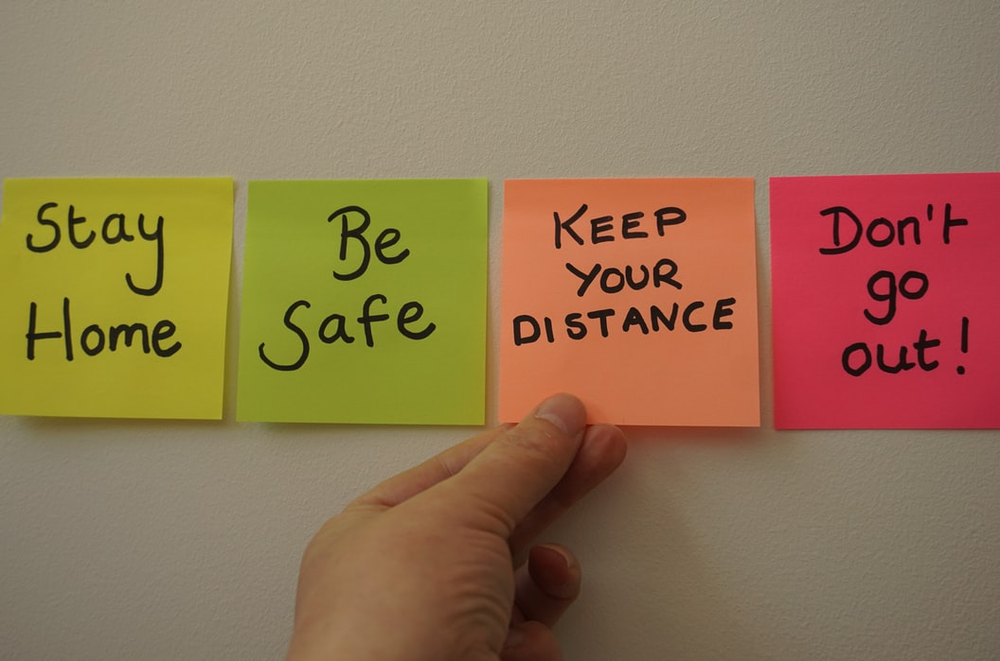
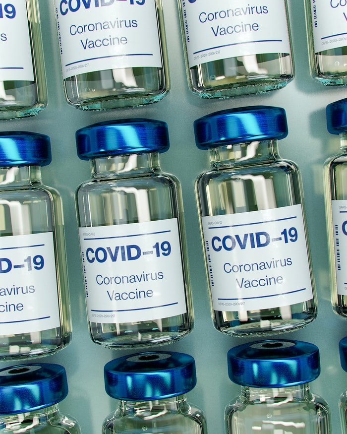

Apa itu COVID-19?
Covid-19 adalah penyakit menular yang disebabkan oleh SARS-CoV-2, salah satu jenis koronavirus. Penyakit ini mengakibatkan pandemi. Penderita Covid-19 dapat mengalami demam, batuk kering, dan kesulitan bernapas. Sakit tenggorokan, pilek, atau bersin-bersin lebih jarang ditemukan. Saat ini (19 Agustus 2021) kasus penderita covid-19 di Indonesia sudah mencapai 3.854.354 dan jumlah orang yang meninggal karena covid-19 sebanyak 117,588.
Gejala covid-19
Gejala COVID-19 sendiri bisa dirasakan dalam rentang 2—14 hari semenjak terpapar virus korona. Nah, bagaimana sebenarnya perkembangan gejala COVID-19 dari hari ke hari?
Hari 1—3
Gejala awal COVID-19 sangat bervariasi. Centers for Disease Control and Prevention (CDC) Amerika Serikat mengidentifikasi 11 gejala utama COVID-19. Kebanyakan gejala merupakan gejala ringan yang kerap dianggap remeholeh sebagian orang. Demam, batuk kering, serta kehilangan indra penciuman dan pengecapan adalah gejala yang paling umum dirasakan penderita COVID-19 pada hari pertama.Hari 4—6
Beberapa pasien tetap hanya mengalami gejala ringan atau bahkan tidak bergejala sama sekal. Ini yang kerap disebut sebagai orang tanpa gejala. Selain itu, beberapa anak dan orang dewasa yang lebih muda dengan penyakit ringan mungkin mengalami ruam, termasuk bercak merah yang gatal, bengkak atau melepuh pada jari kaki. Dr. Schwartz sendiri mengalami gejala pernapasan dan pelepuhan pada kaki dalam rentang waktu tersebut.Hari 7-8
Dikutip dari Kompas.com, hari ketujuh merupakan rata-rata waktu pasien di Wuhan, China, dirawat di rumah sakit. Para pasien dengan penyakit ringan dapat sembuh setelah mengalami fase terburuk dalam rentang waktu ini. Namun, pasien tersebut tetap harus menunggu 10 hari sejak hari pertama gejala dimulai dan melewati 24 jam tanpa demam sebelum diperbolehkan meninggalkan isolasi. Dalam kasus lain, pasien biasanya terus-menerus merasa tidak enak badan atau bahkan memburuk.Hari 8-12
Pemantauan juga terus dilanjutkan selama minggu kedua. Pasien mungkin merasa lebih baik untuk tidur dengan posisi tengkurap atau menyamping. Dalam rentang ini, pasien dapat membaik atau malah memburuk yang ditunjukkan lewat peningkatan batuk dan sesak nafas.Hari 13-14
Pasien dengan penyakit ringan biasanya sudah pulih dengan baik selama rentang ini. Pasien dengan lebih buruk, tetapi dengan kadar oksigen normal sebagian besar akan pulih setelah dua minggu. Namun, banyak juga pasien kategori ini yang melaporkan kelelahan yang berkepanjangan dan masalah lainnya sebagai salah satu dari dampak pascapemulihan COVID-19. Para penyintas COVID-19 disarankan untuk kembali beraktivitas secara perlahan. Selain itu, pasien dengan gejala parah dan mereka yang membutuhkan perawatan tambahan bisa jadi merasakah kelelahan dan membutuhkan waktu yang lebih lama untuk pulih.
Pencegahan Penularan
Virus covid-19 dapat menular melalui droplet saat orang batuk, bersin berbicara hingga bernapas. Virus corona juga dapat menyebar melalui partiikel-partikel kecil di udara. Serta virus corona juga dapat menular melalui benda yang terkontaminasi virus dari orang batuk atau bersin.
Berikut ada beberapa cara untuk mencegah virus corona :
- Mencuci tangan
- Menjaga Jarak
- Hindari menyentuh bagian Wajah
- Patuhi Protokol Kesehatan
Protokol kesehatan adalah aturan dan ketentuan yang perlu diikuti oleh segala pihak agar dapat beraktivitas secara aman pada saat pandemi COVID-19 ini. Protokol kesehatan dibentuk dengan tujuan agar masyarakat tetap dapat beraktivitas secara aman dan tidak membahayakan keamanan atau kesehatan orang lain.
Berikut lima protokol kessehatan yang wajib dilakukan :
- Menjaga Jarak
- Memakai Masker
- Mencuci Tangan
- Menjauhi Kerumunan
- Membatasi mobilisasi dan interaksi
Mencuci tangan dengan baik dan benar, dengan air mengalir, serta setidaknya selama 20 detik akan membunuh virus yang ada di tangan. Kelihatannya memang remeh, namun hal ini amat penting untuk mencegah penyebaran COVID-19.
Ketika berinteraksi dan berkomunikasi dengan orang lain, jaga jarak atau lakukan physical distancing. Jarak yang direkomendasikan setidaknya dalam radius satu hingga tiga meter dari orang lain. Dengan menerapkan physical distancing, Anda akan terhindari dar droplet orang lain, jika ia batuk atau bersin.
Hindari untuk menyentuh wajah, terutama area mata, hidung, dan mulut untuk mencegah virus masuk ke tubuh Anda. Tangan kita biasanya menyentuh banyak hal dan belum tentu bebas dari virus. Jika terkontaminasi, tangan yang menyentuh area wajah berpotensi memindahkan virus yang tadinya berada di tangan ke dalam tubuh.
Pentingnya Vaksin Covid-19
Vaksinasi atau imunisasi bertujuan untuk membuat sistem kekebalan tubuh seseorang mampu mengenali dan dengan cepat melawan bakteri atau virus penyebab infeksi. Tujuan yang ingin dicapai dengan pemberian vaksin COVID-19 adalah menurunnya angka kesakitan dan angka kematian akibat virus ini
Selain itu, vaksinasi COVID-19 bertujuan untuk mendorong terbentuknya herd immunity atau kekebalan kelompok. Hal ini penting karena ada sebagian orang yang tidak bisa divaksin karena alasan tertentu.
Di samping itu, Anda juga perlu tetap menerapkan protokol kesehatan, baik selama menunggu giliran untuk divaksin maupun setelah mendapatkan vaksin. Sebisa mungkin juga hindari bepergian ke luar rumah atau berkumpul dengan orang banyak. Vaksin COVID-19 diharapkan bisa menjadi solusi untuk menyudahi pandemi yang telah memakan banyak korban jiwa serta melumpuhkan aktivitas masyarakat, dan partisipasi Anda dalam program vaksinasi ini akan sangat membantu pemulihan kondisi negara kita.